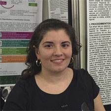

Repositório Digital: instrumento de aprendizagem na Educação Profissional
WIE 2016
EXPERIÊNCIA DE APRENDIZAGEM NA FORMAÇÃO TÉCNICA: REPOSITÓRIO DIGITAL
MPU FURG 2016
REPOSITÓRIO DIGITAL: ACESSO A INFORMAÇÕES SOBRE A EDUCAÇÃO PROFISSIONAL
MPU FURG 2016
Repositório Institucional Digital: Ferramenta no processo de qualificação profissional
MPCT-SEMEX-SEN 2016
Repositório Digital: Instrumento de auxílio na expansão da educação profissional e tecnológica
MPCT-SEMEX-SEN 2016
Integração do conhecimento no desenvolvimento de um repositório digital
IFSUL 2016
Aplicação dos saberes no desenvolvimento de um repositório digital
5º SICT
Nosso Projeto Atual
Aqui está listado o projeto em que trabalhamos.
2016
Observatório Regional do Trabalho e da Educação Profissional e Tecnológica
A criação do Observatório Regional do Trabalho e da Educação Profissional e Tecnológica visa estruturar um centro de documentação e informações de referência que reflita de forma atualizada, permanente e contextualizada as dimensões regionais do mundo do trabalho e sua interação com a Educação Profissional e Tecnológica (EPT)
Quem Somos
Esta é nossa equipe
Vinícius Crizel
Aluno do curso de informática para Internet
Victor Barros
Aluno do curso de informática para Internet
Mônica Nunes
Aluna do curso TADS
Viviani Kwecko
Professora de Artes
Igor Pereira
Professor de Informática
Liziane Garcia
Professora

Juliana Guerra
Professora de Química
Repositório Digital: instrumento de aprendizagem na Educação Profissional
Este trabalho tem o objetivo de apresentar o desenvolvimento e implementação de um repositório digital e a simultânea criação de um website. Concebido por alunos do curso Técnico em Informática para Internet integrado ao ensino médio, esse instrumento de aprendizagem para a Educação Profissional foi dividido em duas etapas: o desenvolvimento do banco de dados e a implementação do website, ambos utilizando linguagens de programação como SQL e PHP, respectivamente. A plataforma visa estruturar um centro de documentação de referência que reflita informações atualizadas e contextualizadas sobre as dimensões regionais da Educação Profissional e Tecnológica (EPT) para servir de apoio para estudos posteriores.
EXPERIÊNCIA DE APRENDIZAGEM NA FORMAÇÃO TÉCNICA: REPOSITÓRIO DIGITAL
Concebido por alunos do curso Técnico em Informática para Internet integrado ao ensino médio, este relato de aprendizagem apresenta o desenvolvimento de um repositório digital e a simultânea criação de um website. Para tanto, foi dividido em duas etapas: o desenvolvimento do banco de dados e a implementação do website. Este trabalho tem o objetivo de estruturar um centro de documentação de referência que reflita informações atualizadas e contextualizadas sobre as dimensões regionais da Educação Profissional e Tecnológica (EPT) para servir de apoio a estudos posteriores.
REPOSITÓRIO DIGITAL: ACESSO A INFORMAÇÕES SOBRE A EDUCAÇÃO PROFISSIONAL
O repositório institucional digital descrito neste trabalho visa contribuir para o desenvolvimento da qualificação profissional do trabalhador por permitir que o arcabouço de suas informações contribua para a política de ampliação da educação técnica e tecnológica da cidade do Rio Grande e entorno. A criação desse sistema vem sendo realizado por alunos do curso de Informática para Internet na modalidade integrado ao ensino médio do IFRS.
Repositório Institucional Digital: Ferramenta no processo de qualificação profissional
A proposta deste trabalho é apresentar a estruturação de um centro de documentação de referência que reflita informações atualizadas e contextualizadas sobre as dimensões regionais da EducaçãoProfissional e Tecnológica (EPT) para servir de apoio a estudos posteriores, além de integrar os alunos do curso de Informática para Internet na modalidade integrado ao ensino médio na criação de um sistema de internet. Na primeira etapa do projeto foi desenvolvido um banco de dados para o qual utilizamos a linguagem de consulta SQL. Para o armazenamento de conteúdo no banco de dados utilizamos PostgreSQL. Na sequência foi esboçada a parte gráfica com o uso das linguagens HTML, CSS e JavaScript, além de softwares de manipulação de imagens como o Gimp. O ambiente de desenvolvimento integrado (IDE) usado é a ferramenta NetBeansIDE pois possui boa integração com o framework CakePHP. Procurou-se, durante o desenvolvimento do website, através da organização lógica de distribuição do conteúdo por trás da criação dos menus e submenus demonstrar a possibilidade do usuário navegar até seu destino em no máximo 3 cliques. Outro elemento refere-se a origem da informação que nesse repositório está vinculada a outras pesquisas sobre o tema aplicadas pelo instituto e por outros repositórios de referência. É importante observar que o website encontra-se em fase de transformação do conteúdo estático em dinâmico, porém seu layout está finalizado. A compilação de dados sob forma de um repositório significa, nesse trabalho, uma ferramenta de aprendizagem, pois permite ao aluno aplicar sua rede de saberes, problematizando seu campo de formação profissional. Assim, a validade desse experimento torna-se altamente relevante para a educação técnica integrada ao ensinomédio.
Repositório Digital: Instrumento de auxílio na expansão da educação profissional e tecnológica
O repositório institucional digital descrito neste trabalho visa contribuir para o desenvolvimento da qualificação profissional do trabalhador por permitir que o arcabouço de suas informações contribua para a política de ampliação da educação técnica e tecnológica da cidade do Rio Grande e entorno. A criação desse sistema vem sendo realizada por alunos do curso de Informática para Internet na modalidade integrado ao ensino médio do IFRS. Foram analisados modelos de sistemas de programação para repositórios digitais, nos quais identificou-se a relação entre as linguagens de programação e o acesso à informação. Posteriormente, desenvolveu-se o banco de dados com as linguagens de programação SQL e PHP além do SGBD PostgreSQL. Para a interface gráfica utilizou-se: HTML, CSS e JavaScript, além de softwares de criação em design como o Gimp. O conteúdo armazenado e organizado neste repositório está vinculado à etapa prévia de coleta de dados, a partir de entrevistas com um grupo de empresários, trabalhadores e professores da educação profissional. A percepção do empresário foi coletada a partir de 38 entrevistas realizadas na 3° Feira do Polo Naval, contemplando empresas ligadas ao setor metalmecânico, prestadoras de serviços e à automação industrial. O perfil do aluno da Educação Profissional, bem como sua relação com o curso e o mercado de trabalho, foi identificado em entrevistas realizadas com 37 docentes do IFRS. As entrevistas com os trabalhadores foram realizadas dentro da área industrial de uma das empresas inseridas no APL, durante o ano de 2015. O cruzamento das duas etapas da pesquisa possibilitou que a codificação, classificação e categorização das informações destes grupos de análise pudessem ser visualizadas através de diferentes formatos de acesso aos dados. Atualmente, o repositório encontra-se programado para oferecer ao usuário informações qualitativas e quantitativas: acesso ao conteúdo original de cada entrevista, bem como resultados de mineração de dados e análise estatística. A implantação desse repositório de dados, poderá orientar os processos de expansão da Educação Profissional e Tecnológica (EPT), alinhando sua oferta de cursos com as demandas do mercado
Integração do conhecimento no desenvolvimento de um repositório digital
Concebido por alunos do curso Técnico em Informática para Internet integrado ao ensino médio, este relato de aprendizagem apresenta o desenvolvimento de um repositório digital e a simultânea criação de um website. Para tanto, foi dividido em duas etapas: o desenvolvimento do banco de dados e a implementação do website. Este trabalho tem o objetivo de estruturar um centro de documentação de referência que reflita informações atualizadas e contextualizadas sobre as dimensões regionais da Educação Profissional e Tecnológica (EPT) para servir de apoio a estudos posteriores. Na primeira etapa do projeto foi desenvolvido um banco de dados para o qual utilizamos a linguagem de consulta SQL. Para o armazenamento de conteúdo no banco de dados utilizamos PostgreSQL. Na sequência foi esboçada a parte gráfica com o uso das linguagens HTML, CSS e JavaScript, além de softwares de manipulação de imagens como o Gimp. O ambiente de desenvolvimento integrado (IDE) usado é a ferramenta NetBeansIDE pois possui boa integração com o framework CakePHP. Procurou-se, durante o desenvolvimento do website, através da organização lógica de distribuição do conteúdo por trás da criação dos menus e submenus demonstrando a possibilidade do usuário de navegar até seu destino em no máximo 3 cliques. Outro elemento refere-se a origem da informação que nesse repositório está vinculada a outras pesquisas sobre o tema aplicadas pelo instituto e por outros repositórios de referência. É importante observar que o website encontra-se em fase de transformação do conteúdo estático em dinâmico, porém seu layout está finalizado. O avanço da tecnologia representa uma maior quantidade de ferramentas e aplicações, que visam facilitar o dia-a-dia de usuários, proporcionando um maior acesso a um conjunto de informações. A compilação de dados sob forma de um repositório significa, nesse trabalho, uma ferramenta de aprendizagem, pois permite ao aluno aplicar sua rede de saberes, problematizando seu campo de formação profissional. Assim, a validade desse experimento torna-se altamente relevante para a educação técnica integrada ao ensino médio.
Aplicação dos saberes no desenvolvimento de um repositório digital
Concebido por alunos do curso Técnico em Informática para Internet integrado ao ensino médio, este relato apresenta o desenvolvimento de um repositório digital paralelamente a criação de um website. Este trabalho tem o objetivo de estruturar um centro de documentação de referência que reflita informações atualizadas e contextualizadas sobre as dimensões regionais da Educação Profissional e Tecnológica (EPT). A carência de uma base de dados modelo, que reúna informações deste tipo em nível regional, motivou a implementação deste repositório para servir de apoio a estudos posteriores. O SGBD utilizado é o PostgreSQL, banco de dados relacional que permite o armazenamento e indexação das informações obtidas por meio das entrevistas com trabalhadores, empregadores e docentes realizadas anteriormente. Inicialmente foi desenvolvido o protótipo do banco de dados, movendo-se para a implementação das interfaces. Na etapa seguinte foram criados diagramas relacionais e de entidade-relacionamento para o banco de dados. O sistema web, que está em fase de finalização, permitirá a representação dos dados em tabelas paginadas com filtros, gráficos e modelos estatísticos, de modo a tornar o conteúdo de fácil acesso e interpretação. Essa plataforma está sendo construída com o CakePHP, framework que utiliza a programação Orientada a Objetos (OO) aplicada a linguagem PHP. Além desta, linguagens de programação como HTML, CSS e JavaScript foram usadas para o desenvolvimento da interface gráfica do website. Para desenvolver um website o programador deve questionar-se acerca do fácil acesso do usuário a informação, se essa informação possui qualidade e credibilidade. Procurou-se considerar tais observações através da lógica de distribuição do conteúdo por trás dos menus, demonstrando a possibilidade do usuário de navegar até seu destino em no máximo 3 cliques. Outro elemento refere-se a origem da informação que nesse repositório está vinculada a outras pesquisas sobre o tema aplicadas pelo instituto e por outros repositórios de referência. A compilação de dados sob forma de um repositório significa uma ferramenta de aprendizagem, pois permite ao aluno aplicar sua rede de saberes, problematizando seu campo de formação profissional. Assim, a validade desse experimento torna-se altamente relevante para a educação técnica integrada ao ensino médio.